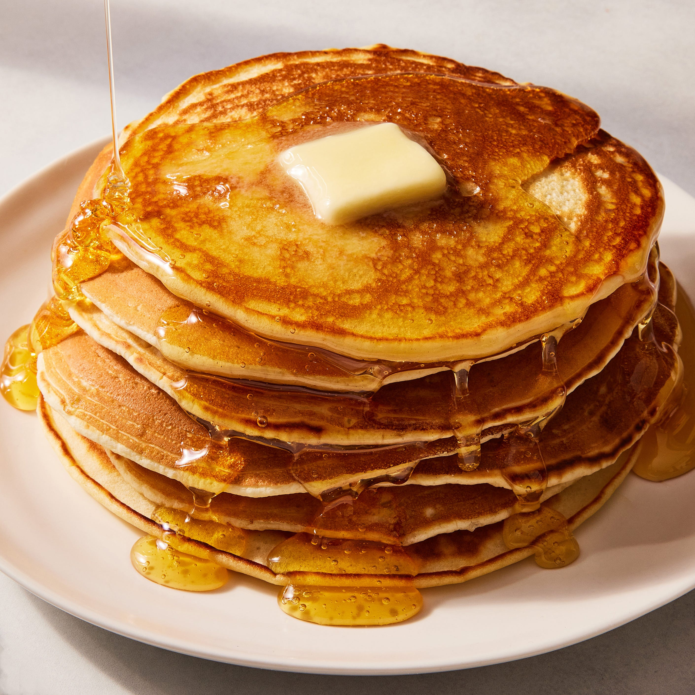

Pancake Recipe

Description
This lasagna recipe takes a little work, but it is so satisfying and filling that it's worth it!
Ingredients
- 1 pound sweet italian sausage
- 3/4 pound lean ground beef
- 1/2 cup mninced onion
- 1 can crusa=hed tomatoes
- 1 cup water
- 4 tablespoons choped parsley
- 1 tablespoon salt
- 12 lasgna noodles
- 1 large egg
- 100 grams mozzarella cheese
- 1/4 tablespoon ground black
Steps
- Gather all ingredients.
- Cook sausage,ground beef and onion over medium heat until well browned.
- Stir in crushed tomatoes,tomato sause and water.Simmer, covered for about 1 hour, stirring occasionally.
- Cook lasagna noodels in boiling water for 8 to 10 minutes. Drain the noodles and rinse with cold water.
- Assemble . Spread 1 1/2 cups of meat sauce in the bottom ,arrange 6 noodles on top and spread the cheese
Home